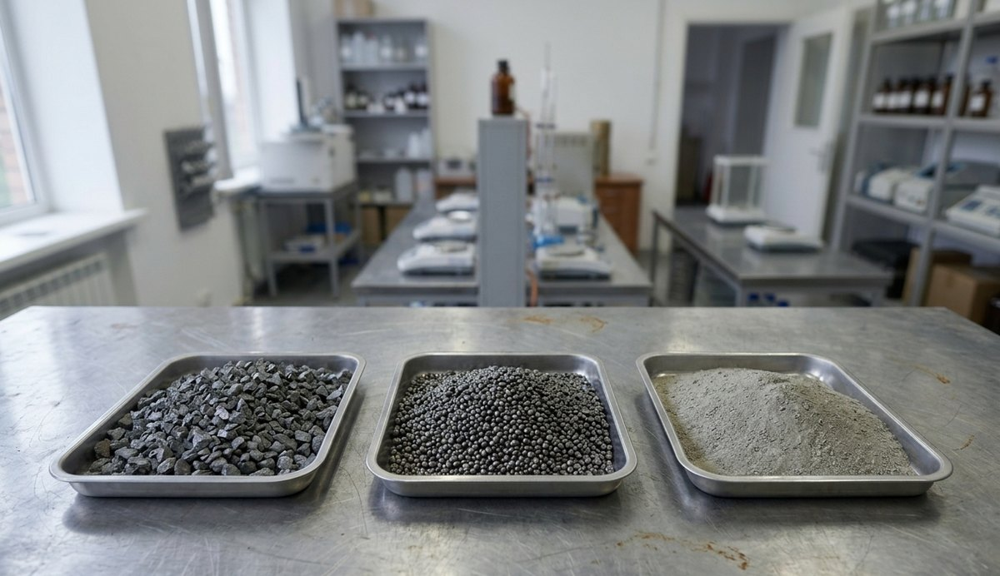

Four numbers you already know about your plant. The calculation runs on your data — we add nothing of our own.
This is the one number nobody knows in advance. It depends on how the metal sits in your material and is established by testing. That is why it stays in your hands rather than in our formula.

What is not included. Processing costs: equipment, installation, energy, staff, logistics. They follow from the flowsheet, and the flowsheet follows from the properties of your material. Until the material has been studied, any cost figure would be invented.
Why the price of feed, not the price of metal. Product recovered from slag goes back as feed — into your own furnace or to a buyer — and is worth what feed is worth. The gap against the exchange quotation for metal is often several times over.
Price follows grade. By entering a price at a given grade, you set your own valuation of the metal in the product. Change the grade and the price is recalculated from that same valuation, so an old figure does not outlive a change in quality. The relation is taken as proportional; in practice a leaner product often loses value faster, so you can overwrite the price at any point and the calculator will take yours.
What the calculation shows. An upper bound — what you yourself value the metal now sitting in the dump at. Whether it is worth looking further is already visible from the order of this figure.
We will tell you whether there is any point in going further. It commits you to nothing.
Submit data on your material